Chapter 5. Learning (I): Cross-validation & OOB
Overview
The question of learning in data analytics concerns whether or not the model has learned from the data. To understand this, let’s look at a few dilemmas.
Dilemma 1. Let’s consider the prediction of a disease. Hired by the Centers of Disease Control and Prevention (CDC), a data scientist built a prediction model (e.g., a logistic regression model) using tens of thousands of patient’ data collected over several years, and the model’s prediction accuracy was \(90\%\). Isn’t this a good model?
Then we are informed that this is a rare disease, and national statistics has shown that only 0.001\(\%\) of the population of the United States have this disease. This contextual knowledge changes our perception of the \(90\%\) prediction accuracy dramatically. Consider a trivial model that simply predicts all the cases as negative (i.e., no disease), wouldn’t this trivial model achieve a prediction accuracy as high as \(99.999\%\)?108 Moral of the story: context matters.
Dilemma 2. Now let’s look at another example. Some studies pointed out that bestsellers could be reasonably predicted by computers based on the book’s content. These studies collected a number of books, some were bestsellers (i.e., based on The New York Times book-selling rank). They extracted features from these books, such as some thematic features and linguistic patterns that could be measured by words use and frequency, and trained prediction models with these features as predictors and the bestseller/non-bestseller as a binary outcome. The model achieved an accuracy between 70% to 80%. This looks promising. The problem is that, e.g., in the dataset, you may see that about 30% of the books were bestsellers.
Statistics show that in recent years there could have been more than one million new books published each year. How many of them would make The New York Times bestseller list? Maybe \(0.01\%\) or fewer. So the dataset collected for training the data is not entirely representative of the population. And in fact, this is another rare-disease-like situation109 Moral of the story: how the dataset is collected also matters..
Dilemma 3. As we have mentioned in Chapter 2, the R-squared measures the goodness-of-fit of a regression model. Let’s revisit the definition of the R-squared
\[\begin{equation*} \small \text{R-squared} = \frac{\sigma_{y}^{2}-\sigma_{\varepsilon}^{2}}{\sigma_{y}^{2}}. \end{equation*}\]
We can see that the denominator is always fixed, no matter how we change the regression model; while the numerator could only decrease if more variables are put into the model, even if these new variables have no relationship with the outcome variable. In other words, with more variables in the model, even if the residuals are not reduced, at worst they remain the same110 For a more formal discussions about the technical limitations of R-squared, e.g., a good starting point is: Kvalseth, T.O., Cautionary Note about \(R^2\), The American Statistician, Volume 39, Issue 4, Pages 279-285, 1985..
Further, the R-squared is impacted by the variance of the predictors as well. As the regression model is
\[\begin{equation*} \small y = \boldsymbol{x} \boldsymbol{\beta} +\epsilon, \end{equation*}\]
it is known that the variance of \(y\) is the variance of \(\operatorname{var}(y) = \boldsymbol{\beta}^{T} \operatorname{var}(x)\boldsymbol{\beta} + \operatorname{var}(\epsilon)\). The R-squared can be rewritten as
\[\begin{equation*} \small R^{2} = \frac{\boldsymbol{\beta}^{T} \operatorname{var}(\boldsymbol{x})\boldsymbol{\beta}}{\boldsymbol{\beta}^{T} \operatorname{var}(\boldsymbol{x})\boldsymbol{\beta} + \operatorname{var}(\epsilon)}. \end{equation*}\]
Thus, the R-squared is not only impacted by how well \(\boldsymbol{x}\) can predict \(y\), but also by the variance of \(\boldsymbol{x}\) as well111 Moral of the story: a model’s performance metric could be manipulated under “legal” terms..
Cross-validation
Rationale and formulation
Performance metrics, such as accuracy and R-squared, are context-dependent (Dilemma 1), data-dependent (Dilemma 2), and vulnerable to conscious or unconscious manipulations (Dilemma 3). These limitations make them relative metrics. They are not the absolutes that we can rely on to evaluate models in a universal fashion in all contexts.
So, what should be the universal and objective criteria to evaluate the learning performance of a model?
To answer this question, we need to understand the concepts, underfit, good fit, and overfit.

Figure 82: Three types of model performance
Figure 82 shows three models to fit the same dataset that has two classes of data points. The first model is a linear model112 E.g., \(f_1(x)=\beta_{0}+\beta_{1} x_{1}+\beta_{2} x_{2}\). that yields a straight line as the decision boundary. Obviously, many data points are misclassified when using a linear decision boundary. Some curvature is needed to bend the decision boundary, so we introduce some second order terms and an interaction term of the two predictors to create another model113 E.g., \(f_2(x)=\beta_{0}+\beta_{1} x_{1}+\beta_{2} x_{2}+\beta_{11} x_{1}^{2}+\beta_{22} x_{2}^{2}+\beta_{12} x_{1} x_{2}\).. The decision boundary is shown in Figure 82 (middle). This improved model still could not classify the two classes completely. More interaction terms114 E.g., \(f_3(\boldsymbol{x})=\beta_{0}+\beta_{1} x_{1}+\beta_{2} x_{2}+\beta_{11} x_{1}^{2}+\beta_{22} x_{2}^{2}+\beta_{12} x_{1} x_{2}+\beta_{112} x_{1}^{2} x_{2}+\beta_{122} x_{1} x_{2}^{2}+\cdots\). are introduced into the model. The decision boundary is shown in Figure 82 (right).
Now \(100\%\) prediction accuracy could be achieved. A sense of suspicion should arise: is this too good to be true?
What we have seen in Figure 82, on the positive side, is the capacity we can develop to fit a dataset115 Fit a dataset is not necessarily model a dataset. Beginners may need time to develop a sense to see the difference between the two.. On the other hand, what is responsible for the sense of suspicion of “too good to be true” is that we didn’t see a validation process at work.
Recall a general assumption of data modeling is116 I.e., Eq. (2) in Chapter 2.
\[\begin{equation*} \underbrace{y}_{data} = \underbrace{f(\boldsymbol{x})}_{signal} + \underbrace{\epsilon}_{noise}, \end{equation*}\]
where noise is unpredictable. Bearing this framework in mind, we revisit the three models in Figure 82, which from left to right illustrate underfit, good fit, and overfit, respectively. A model called underfitted means it fails to incorporate some pattern of the signal in the dataset. A model called overfitted means it allows the noise to affect the model117 Noise, by definition, only happens by accident. While the model, by definition, is to generalize the constancy, i.e., the signal, of the data rather than its unrepeatable randomness.. A dataset could be randomly generated, but the mechanism of generating the randomness118 I.e., like a distribution model. is a constancy. The model in the middle panel of Figure 82 is able to maintain a balance: it captures the structural constancy in the data to form the model, while resisting the noise and refusing to let them bend its decision boundary.
In summary, Figure 82 illustrates that:
Overfit: Complexity of the model > complexity of the signal;
Good fit: Complexity of the model = complexity of the signal;
Underfit: Complexity of the model < complexity of the signal.
In practice, however, the ultimate dilemma is we don’t know what to expect: how much variability in the data comes from the signal or the noise? A sense of proportion always matters, and methods such as cross-validation come to our rescue.
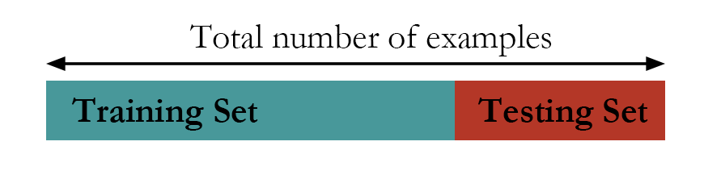 Figure 83: The hold-out method
Theory/Method
In what follows, a few approaches that help us to identify the model with good fit (i.e., the one shown in Figure 82 (middle), \(f_2(x)\)) are introduced. These approaches share the same goal: to train a model on the training data and make sure the learned model would succeed on an unseen testing dataset.
 Figure 84: The random sampling method
Figure 84: The random sampling method
The first approach is the hold-out method. As shown in Figure 83, the hold-out method randomly divides a given dataset into two parts. The model is trained on the training data only, while its performance is evaluated on the testing data. For instance, for the three models shown in Figure 82, each of them will be trained on the training dataset and will have their regression coefficients estimated. Then, the learned models will be evaluated on the testing data. The model that has the best performance on the testing data will be selected as the final model.
Another approach called random sampling repeats this random division many times, as shown in Figure 84. Each time, the model training and selection only uses the training dataset, and the model evaluation only uses the testing dataset. The performance of the models on the three experiments could be averaged and the model that has the best average performance is selected.
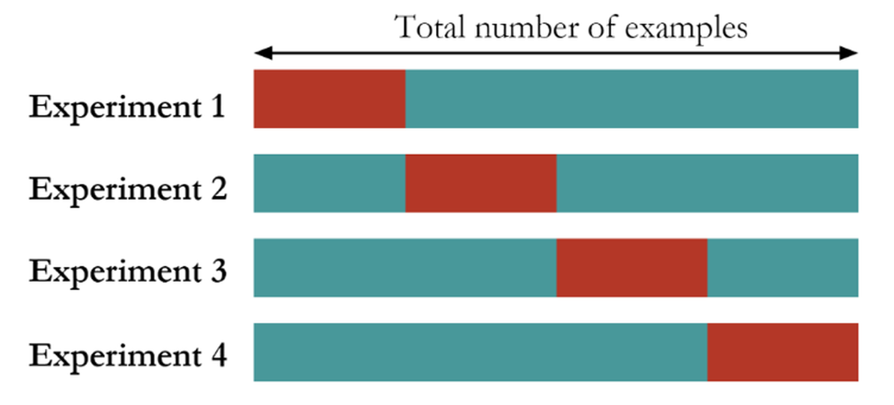 Figure 85: The K-fold cross-validation method (here, \(K=4\))
The K-fold cross-validation is a mix of the random sampling method and the hold-out method. It first divides the dataset into \(K\) folds of equal sizes. Then, it trains a model using any combination of \(K-1\) folds of the dataset, and tests the model using the remaining one-fold of the dataset. As shown in Figure 85, the model training and testing process is repeated \(K\) times. The performance of the models on the \(K\) experiments could be averaged and the model that has the best average performance is selected.
These approaches can be used for evaluating a model’s performance in a robust way. They are also useful when we’d like to choose among model types119 E.g., decision tree vs. linear regression. or model formulations120 E.g., model 1: \(y=\beta_{0}+\beta_{1} x_1\); vs. model 2: \(y=\beta_{0}+\beta_{1} x_1+\beta_{2} x_2\).. While the model type and the model formulation is settled, for example, suppose that we have determined to use linear regression and the model formulation \(y=\beta_{0}+\beta_{1} x_1+\beta_{2} x_2\), these methods could be used to evaluate the performance of this single model. It is not uncommon that in real data analysis, these cross-validation and sampling methods are used in combination and serve different stages of the analysis process.
R Lab
The 4-Step R Pipeline. Step 1 and Step 2 are standard procedures to get data into R and further make appropriate preprocessing.
# Step 1 -> Read data into R workstation
library(RCurl)
url <- paste0("https://raw.githubusercontent.com",
"/analyticsbook/book/main/data/AD.csv")
AD <- read.csv(text=getURL(url))
# Step 2 -> Data preprocessing
# Create your X matrix (predictors) and Y vector
# (outcome variable)
X <- AD[,2:16]
Y <- AD$MMSCORE
data <- data.frame(X,Y)
names(data)[16] <- c("MMSCORE")Step 3 creates a list of models to be evaluated and compared with121 Linear regression: we often compare models using different predictors; \ Decision tree: we often compare models with different depths; \ Random forests: we often compare models with a different number of trees, a different depth of individual trees, or a different number of features to be randomly picked up to split the nodes..
# Step 3 -> gather a list of candidate models
# Use linear regression model as an example
model1 <- "MMSCORE ~ ."
model2 <- "MMSCORE ~ AGE + PTEDUCAT + FDG + AV45 + HippoNV +
rs3865444"
model3 <- "MMSCORE ~ AGE + PTEDUCAT"
model4 <- "MMSCORE ~ FDG + AV45 + HippoNV"Step 4 uses the \(10\)-fold cross-validation to evaluate the models and find out which one is the best. The R code is shown below and is divided into two parts. The first part uses the sample() function to create random split of the dataset into \(10\) folds.
# Step 4 -> Use 10-fold cross-validation to evaluate all models
# First, let me use 10-fold cross-validation to evaluate the
# performance of model1
n_folds = 10
# number of fold (the parameter K in K-fold cross validation)
N <- dim(data)[1] # the sample size, N, of the dataset
folds_i <- sample(rep(1:n_folds, length.out = N))
# This randomly creates a labeling vector (1 X N) for
# the N samples. For example, here, N = 16, and
# I run this function and it returns
# the value as 5 4 4 10 6 7 6 8 3 2 1 5 3 9 2 1.
# That means, the first sample is allocated to the 5th fold,
# the 2nd and 3rd samples are allocated to the 4th fold, etc.The second part shows how we evaluate the models. We only show the code for two models, as the script for evaluating each model is basically the same.
# Evaluate model1
# cv_mse aims to make records of the mean squared error
# (MSE) for each fold
cv_mse <- NULL
for (k in 1:n_folds) {
test_i <- which(folds_i == k)
# In each iteration of the 10 iterations, remember, we use one
# fold of data as the testing data
data.train <- data[-test_i, ]
# Then, the remaining 9 folds' data form our training data
data.test <- data[test_i, ]
# This is the testing data, from the ith fold
lm.AD <- lm(model1, data = data.train)
# Fit the linear model with the training data
y_hat <- predict(lm.AD, data.test)
# Predict on the testing data using the trained model
true_y <- data.test$MMSCORE
# get the true y values for the testing data
cv_mse[k] <- mean((true_y - y_hat)^2)
# mean((true_y - y_hat)^2): mean squared error (MSE).
# The smaller this error, the better your model is
}
mean(cv_mse)
# Then, evaluate model2
cv_mse <- NULL
# cv_mse aims to make records of the mean squared error (MSE)
# for each fold
for (k in 1:n_folds) {
test_i <- which(folds_i == k)
# In each iteration of the 10 iterations, remember,
# we use one fold of data as the testing data
data.train <- data[-test_i, ]
# Then, the remaining 9 folds' data form our training data
data.test <- data[test_i, ]
# This is the testing data, from the ith fold
lm.AD <- lm(model2, data = data.train)
# Fit the linear model with the training data
y_hat <- predict(lm.AD, data.test)
# Predict on the testing data using the trained model
true_y <- data.test$MMSCORE
# get the true y values for the testing data
cv_mse[k] <- mean((true_y - y_hat)^2)
# mean((true_y - y_hat)^2): mean squared error (MSE).
# The smaller this error, the better your model is
}
mean(cv_mse)
# Then, evaluate model3 ...
# Then, evaluate model4 ...The result is shown below.
## [1] 3.17607
## [1] 3.12529
## [1] 4.287637
## [1] 3.337222We conclude that model2 is the best one, as it achieves the minimum mean squared error (MSE).
Simulation Experiment. How do we know the cross-validation could identify a good model, i.e., the one that neither overfits nor underfits the data? Let’s design a simulation experiment to study the performance of cross-validation122 A large portion of the R script in this subsection was modified from malanor.net, now no longer an active site..
The purpose of the experiment is two-fold: (1) to show that the cross-validation can help us mitigate the model selection problem, and (2) to show that R is not just a tool for implementing data analysis methods, but also an experimental tool to gain first-hand experience of any method’s practical performance.
Our experiment has a clearly defined metric to measure the complexity of the signal. We resort to the spline models123 A good tutorial: Eilers, P. and Marx, B., Splines, Knots, and Penalties, Computational statistics, Volume 2, Issue 6, Pages 637-653, 2010. that could be loosely put into the category of regression models, which have a precise mechanism to tune a model’s complexity, i.e., through the parameter of degree of freedom (df). For simplicity, we simulate a dataset with one predictor and one outcome variable. In R, we use the ns() function to simulate the spline model.
The outcome is a nonlinear curve124 Here, we use the B-spline basis matrix for natural cubic splines to create a nonlinear curve. This topic is beyond the scope of this book.. We use the degree of freedom (df) parameter in the ns() function to control the complexity of the curve, i.e., the larger the df, the more “nonlinear” the curve. As this curve is the signal of the data, we also simulate noise through a Gaussian distribution using the rnorm() function.
# Write a simulator to generate dataset with one predictor and
# one outcome from a polynomial regression model
seed <- rnorm(1)
set.seed(seed)
gen_data <- function(n, coef, v_noise) {
eps <- rnorm(n, 0, v_noise)
x <- sort(runif(n, 0, 100))
X <- cbind(1,ns(x, df = (length(coef) - 1)))
y <- as.numeric(X %*% coef + eps)
return(data.frame(x = x, y = y)) }The following R codes generate the scattered grey data points and the true model as shown in Figure 86.
# install.packages("splines")
require(splines)
## Loading required package: splines
# Simulate one batch of data, and see how different model
# fits with df from 1 to 50
n_train <- 100
coef <- c(-0.68,0.82,-0.417,0.32,-0.68)
v_noise <- 0.2
n_df <- 20
df <- 1:n_df
tempData <- gen_data(n_train, coef, v_noise)
x <- tempData[, "x"]
y <- tempData[, "y"]
# Plot the data
x <- tempData$x
X <- cbind(1, ns(x, df = (length(coef) - 1)))
y <- tempData$y
plot(y ~ x, col = "gray", lwd = 2)
lines(x, X %*% coef, lwd = 3, col = "black")
Figure 86: The simulated data from a nonlinear regression model with B-spline basis matrix (df=4), and various fitted models with different degrees of freedom
We then fit the data with a variety of models, starting from df=1125 I.e., corresponds to the linear model. to df=20126 I.e., a very complex model.. The fitted curves are overlaid onto the scattered data points in Figure 86. It can be seen that the linear model obviously underfits the data, as it lacks the flexibility to characterize the complexity of the signal sufficiently. The model that has (df=20) overfits the data, evidenced by its complex shape. It tries too hard to fit the local patterns, i.e., by all the turns and twists of its curve, while the local patterns were mostly induced by noise127 A model that tries too hard to fit the training data by absorbing its noise into its shape will not perform well on future unseen testing data, since the particular noise in the training data would not appear in the testing data—if a noise repeats itself, it is not noise anymore but signal..
# Fit the data using different models with different
# degrees of freedom (df)
fit <- apply(t(df), 2, function(degf) lm(y ~ ns(x, df = degf)))
# Plot the models
plot(y ~ x, col = "gray", lwd = 2)
lines(x, fitted(fit[[1]]), lwd = 3, col = "darkorange")
lines(x, fitted(fit[[4]]), lwd = 3, col = "dodgerblue4")
# lines(x, fitted(fit[[10]]), lwd = 3, col = "darkorange")
lines(x, fitted(fit[[20]]), lwd = 3, col = "forestgreen")
legend(x = "topright", legend = c("True function",
"Linear fit (df = 1)", "Best model (df = 4)",
"Overfitted model (df = 15)","Overfitted model (df = 20)"),
lwd = rep(3, 4), col = c("black", "darkorange", "dodgerblue4",
"forestgreen"), text.width = 32, cex = 0.6)Note that, in this example, we have known that the true model has df=4. In reality, we don’t have this knowledge. It is dangerous to keep increasing the model complexity to aggressively pursue better prediction performance on the training data. To see the danger, let’s do another experiment.
First, we use the following R code to generate a testing data from the same distribution of the training data.
# Generate test data from the same model
n_test <- 50
xy_test <- gen_data(n_test, coef, v_noise)Then, we fit a set of models from linear (df=1) to (df=20) using the training dataset. And we compute the prediction errors of these models using the training dataset and testing dataset separately. This is done by the following R script.
# Compute the training and testing errors for each model
mse <- sapply(fit, function(obj) deviance(obj)/nobs(obj))
pred <- mapply(function(obj, degf) predict(obj, data.frame(x =
xy_test$x)),fit, df)
te <- sapply(as.list(data.frame(pred)),
function(y_hat) mean((xy_test$y - y_hat)^2))
Figure 87: Prediction errors of the models (from (df\(=0\)) to (df\(=20\))) on the training dataset and testing data
We further present the training and testing errors of the models in Figure 87, by running the R script below.
# Plot the errors
plot(df, mse, type = "l", lwd = 2, col = gray(0.4),
ylab = "Prediction error",
xlab = "The degrees of freedom (logged) of the model",
ylim = c(0.9*min(mse), 1.1*max(mse)), log = "x")
lines(df, te, lwd = 2, col = "orange3")
points(df[1], mse[1], col = "palegreen3", pch = 17, cex = 1.5)
points(df[1], te[1], col = "palegreen3", pch = 17, cex = 1.5)
points(df[which.min(te)], mse[which.min(te)], col = "darkorange",
pch = 16, cex = 1.5)
points(df[which.min(te)], te[which.min(te)], col = "darkorange",
pch = 16,cex = 1.5)
points(df[15], mse[15], col = "steelblue", pch = 15, cex = 1.5)
points(df[15], te[15], col = "steelblue", pch = 15, cex = 1.5)
legend(x = "top", legend = c("Training error", "Test error"),
lwd = rep(2, 2), col = c(gray(0.4), "orange3"), text.width = 0.3,
cex = 0.8)Figure 87 shows that the prediction error on the training dataset keeps decreasing with the increase of the df. This is consistent with our theory, and this only indicates a universal phenomenon that a more complex model can fit the training data better. On the other hand, we could observe that the testing error curve shows a U-shaped curve, indicating that an optimal model128 I.e., the dip location on the U-shaped curve is where the optimal df could be found. exists in this range of the model complexity.
As this is an observation made on one dataset that was randomly generated, we should repeat this experiment multiple times to see if our observation is robust. The following R code repeats this experiment \(100\) times and presents the results in Figure 88.
# Repeat the above experiments in 100 times
n_rep <- 100
n_train <- 50
coef <- c(-0.68,0.82,-0.417,0.32,-0.68)
v_noise <- 0.2
n_df <- 20
df <- 1:n_df
xy <- res <- list()
xy_test <- gen_data(n_test, coef, v_noise)
for (i in 1:n_rep) {
xy[[i]] <- gen_data(n_train, coef, v_noise)
x <- xy[[i]][, "x"]
y <- xy[[i]][, "y"]
res[[i]] <- apply(t(df), 2,
function(degf) lm(y ~ ns(x, df = degf)))
}
# Compute the training and test errors for each model
pred <- list()
mse <- te <- matrix(NA, nrow = n_df, ncol = n_rep)
for (i in 1:n_rep) {
mse[, i] <- sapply(res[[i]],
function(obj) deviance(obj)/nobs(obj))
pred[[i]] <- mapply(function(obj, degf) predict(obj,
data.frame(x = xy_test$x)),res[[i]], df)
te[, i] <- sapply(as.list(data.frame(pred[[i]])),
function(y_hat) mean((xy_test$y - y_hat)^2))
}
# Compute the average training and test errors
av_mse <- rowMeans(mse)
av_te <- rowMeans(te)
# Plot the errors
plot(df, av_mse, type = "l", lwd = 2, col = gray(0.4),
ylab = "Prediction error",
xlab = "The degrees of freedom (logged) of the model",
ylim = c(0.7*min(mse), 1.4*max(mse)), log = "x")
for (i in 1:n_rep) {
lines(df, te[, i], col = "lightyellow2")
}
for (i in 1:n_rep) {
lines(df, mse[, i], col = gray(0.8))
}
lines(df, av_mse, lwd = 2, col = gray(0.4))
lines(df, av_te, lwd = 2, col = "orange3")
points(df[1], av_mse[1], col = "palegreen3", pch = 17, cex = 1.5)
points(df[1], av_te[1], col = "palegreen3", pch = 17, cex = 1.5)
points(df[which.min(av_te)], av_mse[which.min(av_te)],
col = "darkorange", pch = 16, cex = 1.5)
points(df[which.min(av_te)], av_te[which.min(av_te)],
col = "darkorange", pch = 16, cex = 1.5)
points(df[20], av_mse[20], col = "steelblue", pch = 15, cex = 1.5)
points(df[20], av_te[20], col = "steelblue", pch = 15, cex = 1.5)
legend(x = "center", legend = c("Training error", "Test error"),
lwd = rep(2, 2), col = c(gray(0.4), "darkred"),
text.width = 0.3, cex = 0.85)
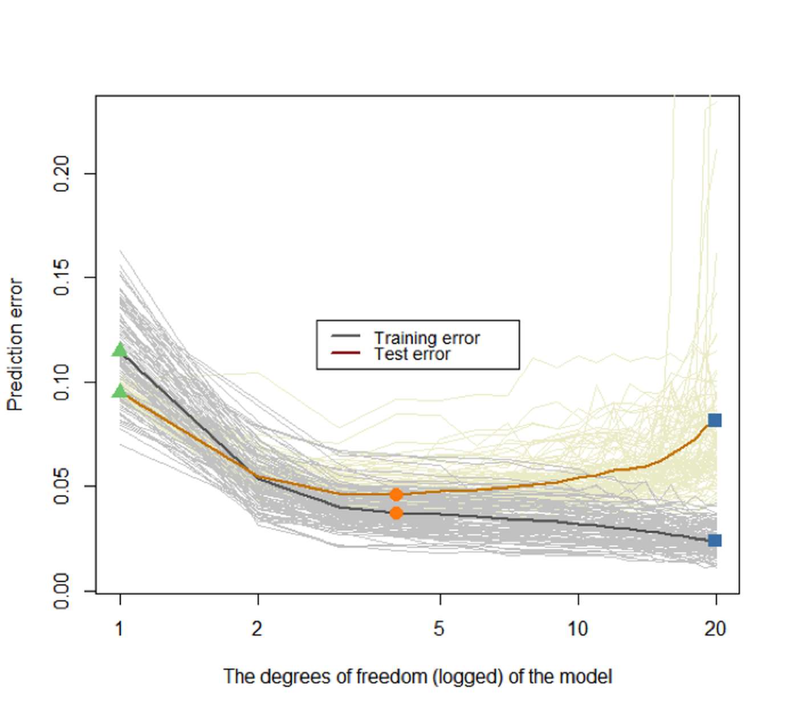
Figure 88: Prediction errors of the models (from df\(=0\) to df\(=20\)) on the training dataset and testing dataset of \(100\) replications. The two highlighted curves represent the mean curves of the \(100\) replications of the training and testing error curves, respectively
Again, we can see that the training error keeps decreasing when the model complexity increases, while the testing error curve has a U-shape. The key to identify the best model complexity is to locate the lowest point on the U-shaped error curve obtained from a testing dataset.
These experiments show that we need a testing dataset to evaluate the model to guide the model selection. Suppose you don’t have a testing dataset. The essence of a testing dataset is that it is not used for training the model. So you create one. What the hold-out, random sampling, and cross-validation approaches really do is use the training dataset to generate an estimate of the error curve that is supposed to be obtained from a testing dataset129 See Figure 95 and its associated text in the Remarks section for more discussion..
To see that, let’s consider a scenario that there are \(200\) samples, and a client has split them into two parts, i.e., a training dataset with \(100\) samples and a testing dataset with another \(100\) samples. The client only sent the training dataset to us. So we use the \(10\)-fold cross-validation on the training dataset, using the following R code, to evaluate the models (df from \(0\) to \(20\)).
# Cross-validation
set.seed(seed)
n_train <- 100
xy <- gen_data(n_train, coef, v_noise)
x <- xy$x
y <- xy$y
fitted_models <- apply(t(df), 2,
function(degf) lm(y ~ ns(x, df = degf)))
mse <- sapply(fitted_models,
function(obj) deviance(obj)/nobs(obj))
n_test <- 100
xy_test <- gen_data(n_test, coef, v_noise)
pred <- mapply(function(obj, degf)
predict(obj, data.frame(x = xy_test$x)),
fitted_models, df)
te <- sapply(as.list(data.frame(pred)),
function(y_hat) mean((xy_test$y - y_hat)^2))
n_folds <- 10
folds_i <- sample(rep(1:n_folds, length.out = n_train))
cv_tmp <- matrix(NA, nrow = n_folds, ncol = length(df))
for (k in 1:n_folds) {
test_i <- which(folds_i == k)
train_xy <- xy[-test_i, ]
test_xy <- xy[test_i, ]
x <- train_xy$x
y <- train_xy$y
fitted_models <- apply(t(df), 2, function(degf) lm(y ~
ns(x, df = degf)))
x <- test_xy$x
y <- test_xy$y
pred <- mapply(function(obj, degf) predict(obj,
data.frame(ns(x, df = degf))),
fitted_models, df)
cv_tmp[k, ] <- sapply(as.list(data.frame(pred)),
function(y_hat) mean((y - y_hat)^2))
}
cv <- colMeans(cv_tmp)Then we can visualize the result in Figure 89 (the R script is shown below). Note that, in Figure 89, we overlay the result of the \(10\)-fold cross-validation (based on the \(100\) training samples) with the prediction error on the testing dataset to get an idea about how closely the \(10\)-fold cross-validation can approximate the testing error curve130 Remember that, in practice, we will not have access to the testing data, but we want our model to succeed on the testing data, i.e., to obtain the lowest error on the testing error curve. Thus, using cross-validation to mimic this testing procedure based on our training data is a “rehearsal.”.
# install.packages("Hmisc")
require(Hmisc)
plot(df, mse, type = "l", lwd = 2, col = gray(0.4),
ylab = "Prediction error",
xlab = "The degrees of freedom (logged) of the model",
main = paste0(n_folds,"-fold Cross-Validation"),
ylim = c(0.8*min(mse), 1.2*max(mse)), log = "x")
lines(df, te, lwd = 2, col = "orange3", lty = 2)
cv_sd <- apply(cv_tmp, 2, sd)/sqrt(n_folds)
errbar(df, cv, cv + cv_sd, cv - cv_sd, add = TRUE,
col = "steelblue2", pch = 19,
lwd = 0.5)
lines(df, cv, lwd = 2, col = "steelblue2")
points(df, cv, col = "steelblue2", pch = 19)
legend(x = "topright",
legend = c("Training error", "Test error",
"Cross-validation error"),
lty = c(1, 2, 1), lwd = rep(2, 3),
col = c(gray(0.4), "darkred", "steelblue2"),
text.width = 0.4, cex = 0.85)
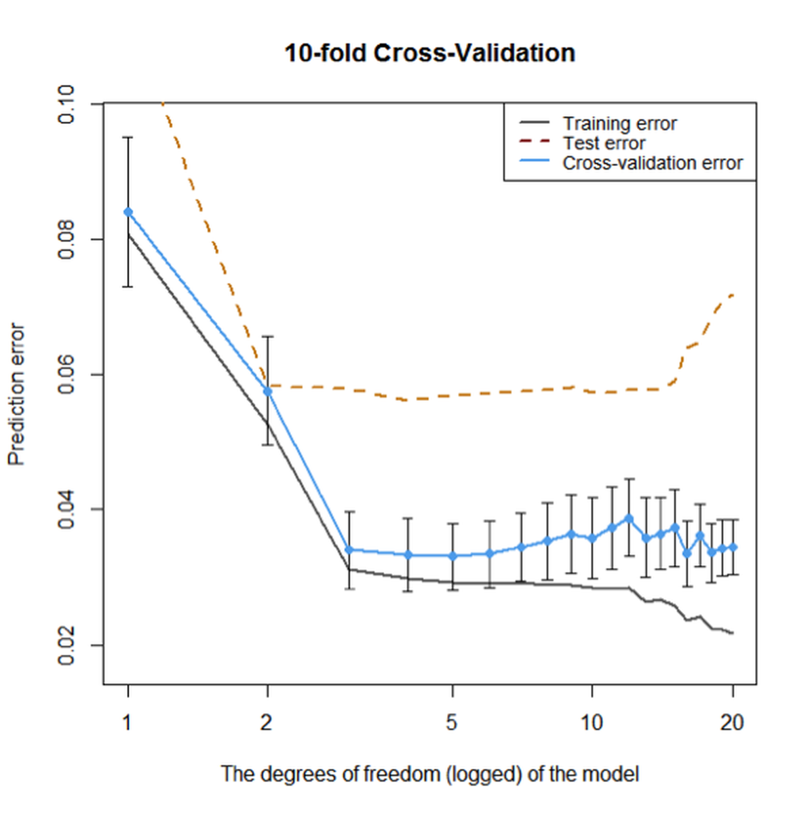
Figure 89: Prediction errors of the models (from df\(=0\) to df\(=20\)) on the training dataset without cross-validation, on the training dataset using \(10\)-fold cross-validation, and testing data of \(100\) samples, respectively
Overall, Figure 89 shows that the \(10\)-fold cross-validation could generate fair evaluation of the models just like an independent and unseen testing dataset. Although its estimation of the error is smaller than the error estimation on the testing dataset, they both point towards the same range of model complexity that will neither overfit nor underfit the data.
Out-of-bag error in random forests
The random forest model provides a concept named out-of-bag error that plays a similar role as the hold-out method. Let’s revisit how it works.
Rationale and formulation
Suppose that we have a training dataset of \(5\) instances (IDs as \(1,2,3,4,5\)). A random forest model with \(3\) trees is built. The \(3\) Bootstrapped datasets are shown in Table 16.
Table 16: Three trees and the bootstrapped datasets
| Tree | Bootstrap |
|---|---|
| \(1\) | \(1,1,4,4,5\) |
| \(2\) | \(2,3,3,4,4\) |
| \(3\) | \(1,2,2,5,5\) |
Since Bootstrap randomly selects samples from the original dataset to form Bootstrapped datasets, some data points in the original dataset may not show up in the Bootstrapped datasets. These data points are called out-of-bag samples (OOB) samples. For instance, for the random forest model that corresponds to Table 16, the OOB samples for each tree are shown in Table 17.
Table 17: Out-of-bag (OOB) samples
| Tree | OOB samples |
|---|---|
| \(1\) | \(2,3\) |
| \(2\) | \(1,5\) |
| \(3\) | \(3,4\) |
The data points that are not used in training a tree could be used to test the tree. The errors on the OOB samples are called the out-of-bag errors. The OOB error can be calculated after a random forest model has been built, which seems to be computationally easier than cross-validation. An example to compute the OOB errors is shown in Table 18.
Table 18: Out-of-bag (OOB) errors
| Data ID | True label | Tree \(1\) | Tree \(2\) | Tree \(3\) |
|---|---|---|---|---|
| \(1\) | \(C1\) | \(C1\) | ||
| \(2\) | \(C2\) | \(C1\) | ||
| \(3\) | \(C2\) | \(C2\) | \(C2\) | |
| \(4\) | \(C1\) | \(C1\) | ||
| \(5\) | \(C2\) | \(C2\) |
We can see that, as the data instance (ID = \(1\)) is not used in training Tree \(2\), we can use Tree \(2\) to predict on this data instance, and we see that it correctly predicts the class as \(C1\). Similarly, Tree \(1\) is used to predict on data instance (ID = \(2\)), and the prediction is wrong. Overall, the OOB error of the random forest model is \(1/6\).
Theory and method
The OOB error provides a computationally convenient approach to evaluate the random forest model without using a testing dataset or a cross-validation procedure. A technical concern is whether this idea can scale up. In other words, are there enough OOB samples to ensure that the OOB error is a fair and robust performance metric?
Recall that, for a random forest model with \(K\) trees, each tree is built on a Bootstrapped dataset from the original training dataset \(D\). There are totally \(K\) Bootstrapped datasets, denoted as \(B_{1,} B_{2}, \ldots, B_{K}\).
Usually, the size of each Bootstrapped dataset is the same size (denoted as \(N\)) as the training dataset \(D\). Each data point in the Bootstrapped dataset is randomly and independently selected. Therefore, the probability of a data point from the training dataset \(D\) missing from a Bootstrapped dataset is131 Because there are \(N\) independent trials of random selection, for a data point not to be selected, it has to be missed \(N\) times. And the probability for “not to be selected” is \(\left(1-\frac{1}{N}\right)\).
\[\begin{equation*} \small \left(1-\frac{1}{N}\right)^{N}. \end{equation*}\]
When \(N\) is sufficiently large, we have
\[\begin{equation*} \small \lim _{N \rightarrow \infty}\left(1-\frac{1}{N}\right)^{N}=e^{-1} \approx 0.37. \end{equation*}\]
Therefore, roughly \(37\%\) of the data points from \(D\) are not contained in a Bootstrapped dataset \(B_i\), and thus, not used for training the tree \(i\). These excluded data points are the OOB samples for the tree \(i\).
As there are \(37\%\) of probability that a data point is not used for training a tree, we can infer that, on average, a data point is not used for training about \(37\%\) of the trees132 Note that the assumption is the Bootstrapped dataset has the same size as the original dataset, and the sampling is with replacement.. In other words, for each data point, in theory \(37\%\) of the trees are trained without this data point. This is a sizeable amount of data points, ensuring that the OOB error could be a stable and accurate evaluation of the model’s performance on future unseen testing data.
R Lab
We design a numeric study to compare the OOB error with the error obtained by a validation procedure and the error estimated on the training dataset. The three types of error rates are plotted in Figure 90.
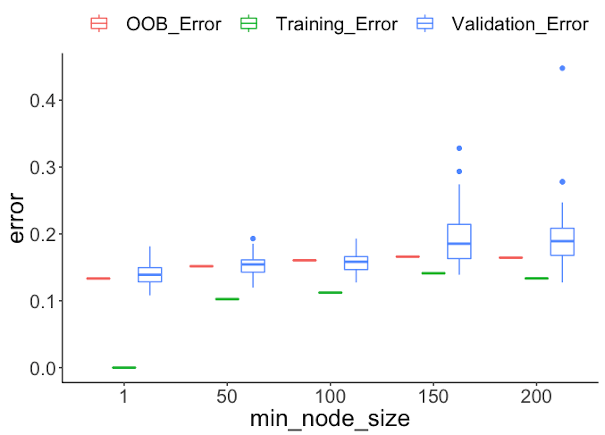 Figure 90: Comparison of different types of error rates
First, we split the dataset into two halves: one for training and one for testing.
library(dplyr)
library(tidyr)
library(ggplot2)
require(randomForest)
set.seed(1)
library(RCurl)
url <- paste0("https://raw.githubusercontent.com",
"/analyticsbook/book/main/data/AD.csv")
data <- read.csv(text = getURL(url))
target_indx <- which(colnames(data) == "DX_bl")
data[, target_indx] <- as.factor(paste0("c", data[, target_indx]))
rm_indx <- which(colnames(data) %in% c("ID", "TOTAL13", "MMSCORE"))
data <- data[, -rm_indx]
para.v <- c(1, 50, 100, 150, 200)
results <- NULLThen, we build a set of random forest models by tuning the parameter nodesize, and obtain the OOB errors of the models.
# OOB error
for (ipara in para.v) {
rf <- randomForest(DX_bl ~ ., nodesize = ipara, data = data)
# nodesize = inodesize
results <- rbind(results, c("OOB_Error",
ipara, mean(rf$err.rate[, "OOB"])))
}We also use the random sampling method to evaluate the errors of the models.
# Validation error
for (ipara in para.v) {
for (i in 1:50) {
train.ix <- sample(nrow(data), floor(nrow(data)/2))
rf <- randomForest(DX_bl ~ ., nodesize = ipara,
data = data[train.ix, ])
pred.test <- predict(rf, data[-train.ix, ], type = "class")
this.err <- length(
which(pred.test != data[-train.ix, ]$DX_bl))/length(pred.test)
results <- rbind(results, c("Validation_Error", ipara, this.err))
}
}Then, we obtain the training errors of the models.
# Training error
for (ipara in para.v) {
rf <- randomForest(DX_bl ~ ., nodesize = ipara, data = data)
# nodesize = inodesize
pred <- predict(rf, data, type = "class")
this.err <- length(which(pred != data$DX_bl))/length(pred)
results <- rbind(results, c("Training_Error", ipara, this.err))
}
colnames(results) <- c("type", "min_node_size", "error")
results <- as.data.frame(results)
results$error = as.numeric(as.character(results$error))
results$min_node_size <- factor(results$min_node_size,
unique(results$min_node_size))
ggplot() + geom_boxplot(data = results,
aes(y = error, x = min_node_size,
color = type)) +
geom_point(size = 3)Figure 90 shows that the OOB error rates are reasonably aligned with the testing error rates, while the training error rates are deceptively smaller.
The following R code conducts another numeric experiment to see if the number of trees impacts the OOB errors. In particular, we compare \(50\) trees with \(500\) trees, with their OOB errors plotted in Figure 91. On the other hand, we also observe that by increasing the number of trees, the OOB error decreases. This phenomenon is not universal (i.e., it is not always observed in all the datasets), but it does indicate the limitation of the OOB error: it is not as robust as the random sampling or cross-validation methods in preventing overfitting. But overall, the idea of OOB is inspiring.
para.v <- c(1, 50, 100, 150, 200)
results <- NULL
# OOB error with 500 trees
for (ipara in para.v) {
rf <- randomForest(DX_bl ~ ., nodesize = ipara, ntree = 500,
data = data)
# nodesize = inodesize
results <- rbind(results, c("OOB_Error_500trees", ipara,
mean(rf$err.rate[,"OOB"])))
}
# OOB error with 50 trees
for (ipara in para.v) {
rf <- randomForest(DX_bl ~ ., nodesize = ipara, ntree = 50,
data = data) # nodesize = inodesize
results <- rbind(results, c("OOB_Error_50trees", ipara,
mean(rf$err.rate[,"OOB"])))
}
colnames(results) <- c("type", "min_node_size", "error")
results <- as.data.frame(results)
results$error = as.numeric(as.character(results$error))
results$min_node_size <- factor(results$min_node_size,
unique(results$min_node_size))
ggplot() + geom_boxplot(data = results,
aes(y = error, x = min_node_size,
fill = type)) +
geom_bar(stat = "identity",position = "dodge")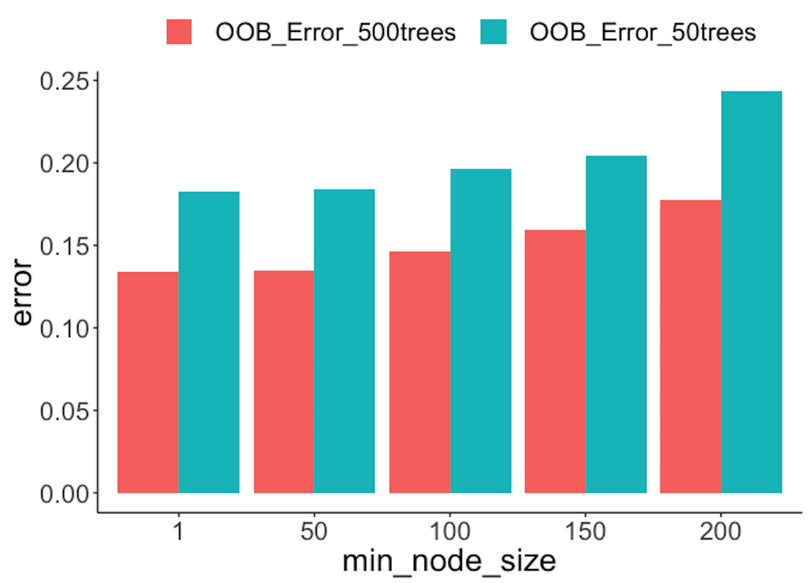 Figure 91: OOB error rates from random forests with a different number of trees
Remarks
The “law” of learning errors
We have seen the R-squared could be manipulated to become larger, i.e., by adding into the model with more variables even if these variables are not predictive. This bug is not a special trait of the linear regression model only. The R-squared by its definition is computed based on the training data, and therefore, is essentially a training error. For any model that offers a flexible degree of complexity (e.g., examples are shown in Table 19), its training error could be decreased if we make the model more complex.
Table 19: The complexity parameters of some models
| Model | Complexity parameter |
|---|---|
| Linear regression | Number of variables |
| Decision tree | Depth of tree |
| Random forest | Number of trees Depth of trees Number of variables to be selected for each split |
Figure 92: A much more complex decision tree model than the one in Figure 48; (left) the tree model perfectly fits the training data; (right) the tree performs poorly on the testing data
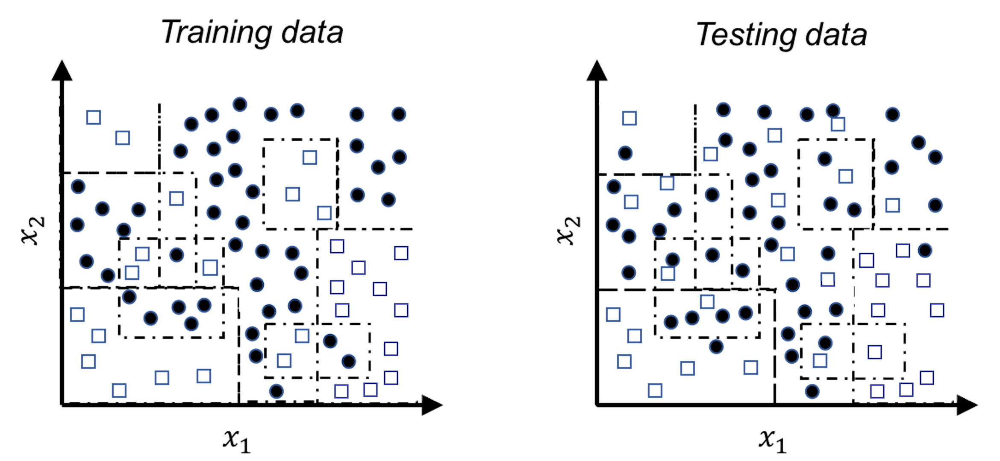For example, let’s revisit the decision tree model shown in Figure 48 in Chapter 3. A deeper tree segments the space into smaller rectangular regions, guided by the distribution of the training data, as shown in Figure 92. The model achieves \(100\%\) accuracy—but this is an illusion, since the training data contains noise that could not be predicted. These rectangular regions, particularly those smaller ones, are susceptible to the noise. When we apply this deeper tree model on a testing data that is sampled from the same distribution of the training data133 The overall morphology of the two datasets looks alike; the differences, however, are due to the noise that is unpredictable., the model performs poorly.
It is generally true that the more complex a model gets, the lower the error on the training dataset becomes, as shown in Figure 93 (left). This is the “law” of the training error, and training a model based on the training error could easily “spoil” the model. If there is a testing dataset, the error curve would look like U-shaped, as shown in Figure 93 (middle), and the curve’s dip point helps us identify the best model complexity. While on the other hand, if there is no testing dataset, we could use cross-validation to obtain error estimates. The error curve obtained by cross-validation on the training data, as shown in Figure 93 (right), should provide a good approximation of the error curve of the testing data. The three figures in Figure 93, from left to right, illustrate a big picture of the laws of the errors and why some techniques such as the cross-validation have central importance in data analytics.

Figure 93: The law of learning errors
There are other approaches that play similar roles as the cross-validation, i.e., to approximate the error curve on unseen testing data. Examples include the Akaike information criterion (AIC), the Bayesian information criterion (BIC), and many other model selection criteria alike. Different from the cross-validation, they don’t resample the training data. Rather, they are analytic approaches that evaluate a model’s performance by offsetting the model’s training error with a complexity penalty, i.e., the more complex a model gets, the larger the penalty imposed. Skipping their mathematical details, Figure 94 illustrates the basic idea of these approaches.
Figure 94: The basic idea of the AIC and BIC criteria
A larger view of model selection and validation
The practice of data analytics has evolved and developed an elaborate process to protect us from overfitting or underfitting a model. The 5-step process is illustrated in Figure 95.
Figure 95: A typical process of how data scientists work with clients to develop robust models
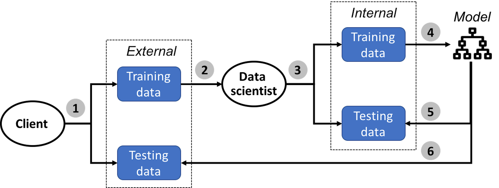In the \(1^{st}\) step, the client collects two datasets, one is the training dataset and another is the testing dataset.
In the \(2^{nd}\) step, the client sends the training dataset to the data scientist to train the model. The client keeps the testing dataset for the client’s own use to test the final model submitted by the data scientist.
Now the data scientist should keep in mind that, no matter how the model is obtained134 In a real application, you may try all you could think of to find your best model. Deep understanding of your models always help. Sometimes it is also luck, insight, and hard-working trial and error. What matters is your model is really good and can outperform your competitor’s. Data scientists survive in a harsh competitive environment., its goal is to predict well on the unseen testing dataset. How shall we do so, without access to the testing dataset?
Just like in Bootstrap, we mimic the process.
In the \(3^{rd}\) step, the data scientist mimics the testing procedure as the client would use. The data scientist splits the training dataset into two parts, one for model training and one for model testing135 Generate a “training dataset” and a “testing dataset” from the training dataset. To avoid confusion, these two are often called internal training dataset and internal testing dataset, respectively. The training and testing datasets the client creates are often called external training dataset and external testing dataset, respectively..
In the \(4^{th}\) step, the data scientist creates a model that should fit the internal training dataset well. Cross-validation is often used in this step.
In the \(5^{th}\) step, the data scientist tests the model obtained in the \(4^{th}\) step using the internal testing data. This is the final pass that will be conducted in house, before the final model is submitted to the client. Note that, the \(5^{th}\) step could not be integrated into the model selection process conducted in the \(4^{th}\) step—otherwise, the internal testing data is essentially used as an internal training dataset136 After all, the usage of the dataset dictates its name..
In the \(6^{th}\) step, the data scientist submits the final model to the client. The model will be evaluated by the client on the internal testing dataset. The data scientist may or may not learn the evaluation result of the final model from the client.
The confusion matrix
The rare disease example mentioned earlier in this chapter implies that the context matters. It also implies that how we evaluate a model’s performance matters as well.
Accuracy, naturally, is a most important evaluation metric. As any overall evaluation metric, it averages things and blurs boundaries between categories, and for the same reason, it could be broken down into more subcategories. For example, a binary classification problem has two classes. We often care about specific accuracy on either class, i.e., if one class represents disease (positive) while another represents normal (negative), as a convention in medicine, we name the correct prediction on a positive case as true positive (TP) and name the correct prediction on a negative case as true negative (TN). Correspondingly, we define the false positive (FP) as incorrect prediction on a true negative case, and false negative (FN) as incorrect prediction on a true positive case. This is illustrated in Table 20, the so-called confusion matrix.
Table 20: The confusion matrix
| Reality: Positive | Reality: Negative | |
| Prediction: Positive | True positive (TP) | False positive (FP) |
| Prediction: Negative | False negative (FN) | True negative (TN) |
Based on TP, the concept true positive rate (TPR) could also be defined, i.e., TPR = TP/(TP+FN). Similarly, we can also define the false positive rate (FPR) as FPR = FP/(FP+TN).
The ROC curve
Building on the confusion matrix, the receiver operating characteristic curve (ROC curve) is an important evaluation metric for classification models.
Recall that, in a logistic regression model, before we make the final prediction, an intermediate result is obtained first
\[\begin{equation*} \small p(\boldsymbol x)=\frac{1}{1+e^{-\left(\beta_{0}+\Sigma_{i=1}^{p} \beta_{i} x_{i}\right)}}. \end{equation*}\]
A cut-off value137 By default, \(0.5\). is used to make the binary predictions, i.e., it classifies the cases whose \(p(\boldsymbol x)\) are larger than the cut-off value as positive; otherwise, if \(p(\boldsymbol x)\) is smaller than the cut-off value, negative. This means that, for each cut-off value, we can obtain a confusion matrix with different values of the TP, FP, FN, and TN. As there are many possible cut-off values, the ROC curve is a succinct way to synthesize all the scenarios of all possible cut-off values, i.e., it tries many cut-off values and plots the FPR (x-axis) against the TPR (y-axis). This is illustrated in Figure 96.
Figure 96: The logistic model produces an intermediate result \(p(\boldsymbol x)\) for the cases of both classes: (left) shows the distributions of \(p(\boldsymbol x)\) of both classes and a particular cut-off value; and (right) shows the ROC curve that synthesizes all the scenarios of all the cut-off values
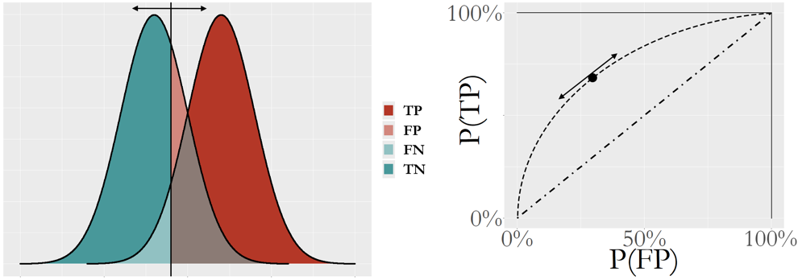The ROC curve is more useful to evaluate a model’s potential, i.e., Figure 96 presents the performances of the logistic regression model for all cut-off values rather than one cut-off value. The \(45^{\circ}\) line represents a model that is equivalent to random guess. In other words, the ROC curve of a model that lacks potential for prediction will be close to the \(45^{\circ}\) line. A better model will show a ROC curve that is closer to the upper left corner point. Because of this, the area under the curve (AUC) is often used to summarize the ROC curve of a model. The higher the AUC, the better the model.
A Small Data Example. Let’s study how a ROC curve could be created using an example. Consider a random forest model of \(100\) trees and its prediction on \(9\) data points. A random forest model uses the majority voting to aggregate the predictions of its trees to reach a final binary prediction. The cut-off value concerned here is the threshold of votes, i.e., here, we try three cut-off values, C=\(50\) (default in randomForest), C=\(37\), and C=\(33\), as shown in Table 21.
Table 21: Prediction on \(9\) data points via a random forest model of \(100\) trees, with different cut-off values of the vote threshold, C=\(50\) (default in randomForest), C=\(37\), and C=\(33\)
| ID | Vote | True Label | C=\(50\) | C=\(37\) | C=\(33\) |
| \(1\) | \(38\) | \(1\) | \(0\) | \(1\) | \(1\) |
| \(2\) | \(49\) | \(1\) | \(0\) | \(1\) | \(1\) |
| \(3\) | \(48\) | \(0\) | \(0\) | \(1\) | \(1\) |
| \(4\) | \(76\) | \(1\) | \(1\) | \(1\) | \(1\) |
| \(5\) | \(32\) | \(0\) | \(0\) | \(0\) | \(0\) |
| \(6\) | \(57\) | \(0\) | \(1\) | \(1\) | \(1\) |
| \(7\) | \(36\) | \(1\) | \(0\) | \(0\) | \(1\) |
| \(8\) | \(36\) | \(0\) | \(0\) | \(0\) | \(1\) |
| \(9\) | \(35\) | \(0\) | \(0\) | \(0\) | \(1\) |
Based on the definition of the confusion matrix in Table 20, we calculate the metrics in Table 22.
Table 22: Metrics for predictions in Table 21
| C=\(50\) | C=\(37\) | C=\(33\) | |
|---|---|---|---|
| Accuracy | \(5/9\) | \(6/9\) | \(5/9\) |
| TP | \(1\) | \(3\) | \(4\) |
| FP | \(1\) | \(2\) | \(4\) |
| FN | \(3\) | \(1\) | \(0\) |
| TN | \(4\) | \(3\) | \(1\) |
| FPR = FP/(FP+TN) | \(1/(1+4)\) | \(2/(2+3)\) | \(4/(4+1)\) |
| TPR = TP/(TP+FN) | \(1/(1+3)\) | \(3/(3+1)\) | \(4/(4+0)\) |
With three cut-off values, we map the three points in Figure 97 by plotting the FPR (x-axis) against the TPR (y-axis). There are a few R packages to generate a ROC curve for a classification model. Figure 97 illustrates the basic idea implemented in these packages to draw a ROC curve: sample a few cut-off values and map a few points in the figure, then draw a smooth curve that connects the point.
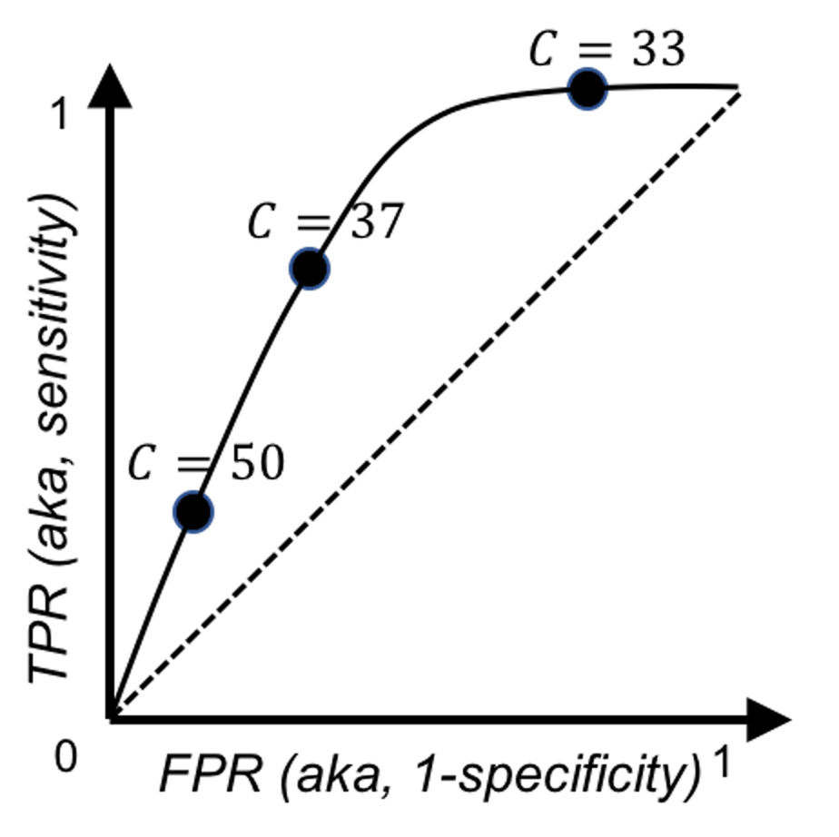 Figure 97: Illustration of how to draw a ROC curve using the data in Tables 21 and 22
R Example.
We build a logistic regression model using the AD data as we have done in Chapter 3.
# ROC and more performance metrics of logistic regression model
# Load the AD dataset
library(RCurl)
url <- paste0("https://raw.githubusercontent.com",
"/analyticsbook/book/main/data/AD.csv")
AD <- read.csv(text=getURL(url))
str(AD)
# Split the data into training and testing sets
n = dim(AD)[1]
n.train <- floor(0.8 * n)
idx.train <- sample(n, n.train)
AD.train <- AD[idx.train,]
AD.test <- AD[-idx.train,]
# Automatic selection of the model
logit.AD.full <- glm(DX_bl ~ ., data = AD.train[,c(1:16)],
family = "binomial")
logit.AD.final <- step(logit.AD.full, direction="both", trace = 0)
summary(logit.AD.final)Then we use the function, confusionMatrix() from the R package caret to obtain the confusion matrix
require(e1071)
require(caret)
# Prediction scores
pred = predict(logit.AD.final, newdata=AD.test,type="response")
confusionMatrix(data=factor(pred>0.5), factor(AD.test[,1]==1))The result is shown below.
## Confusion Matrix and Statistics
##
## Reference
## Prediction FALSE TRUE
## FALSE 48 7
## TRUE 7 42
##
## Accuracy : 0.8654
## 95% CI : (0.7845, 0.9244)
## No Information Rate : 0.5288
## P-Value [Acc > NIR] : 3.201e-13
##
## Kappa : 0.7299
## Mcnemar's Test P-Value : 1
##
## Sensitivity : 0.8727
## Specificity : 0.8571
## Pos Pred Value : 0.8727
## Neg Pred Value : 0.8571
## Prevalence : 0.5288
## Detection Rate : 0.4615
## Detection Prevalence : 0.5288
## Balanced Accuracy : 0.8649
##
## 'Positive' Class : FALSE
## The ROC curve could be drawn using the R Package ROCR.
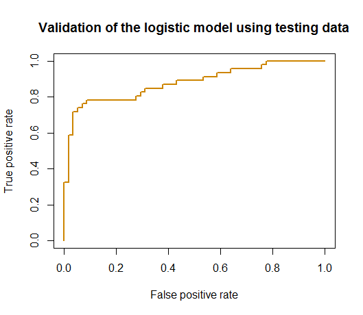 Figure 98: ROC curve of the logistic regression model
# Generate the ROC curve using the testing data
# Compute ROC and Precision-Recall curves
require('ROCR')
linear.roc.curve <- performance(prediction(pred, AD.test[,1]),
measure='tpr', x.measure='fpr' )
plot(linear.roc.curve, lwd = 2, col = "orange3",
main = "Validation of the logistic model using testing data")The ROC curve is shown in Figure 98.
Exercises
1. A random forest model is built on the training data with \(6\) data points. The details of the trees and their bootstrapped datasets are shown in Table 23.
Table 23: Bootstrapped datasets and the built trees
| Bootstrapped data | Tree |
|---|---|
| \(1,3,4,4,5,6\) | \(1\) |
| \(2,2,4,4,4,5\) | \(2\) |
| \(1,2,2,5,6,6\) | \(3\) |
| \(3,3,3,4,5,6\) | \(4\) |
To calculate the out-of-bag (OOB) errors, which legitimate data points are to be used for each tree? You can mark them out in Table 24.
Table 24: Mark the elements where OOB errors could be collected
| Tree | Bootstrapped data | \(1(C1)\) | \(2(C2)\) | \(3(C2)\) | \(4(C1)\) | \(5(C2)\) | \(6(C1)\) |
|---|---|---|---|---|---|---|---|
| \(1\) | \(1,3,4,4,5,6\) | ||||||
| \(2\) | \(2,2,4,4,4,5\) | ||||||
| \(3\) | \(1,2,2,5,6,6\) | ||||||
| \(4\) | \(3,3,3,4,5,6\) |
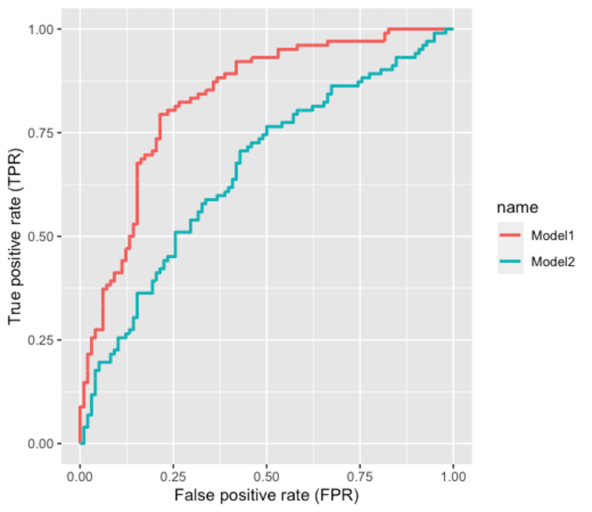 Figure 99: The ROC curve of two models
2. Figure 99 shows the ROC curves of two classification models. Which model is better?
3. Follow up on the simulation experiment in Q9 in Chapter 2 and the random forest model in Q5 in Chapter 4. Split the data into a training set and a testing test, then use \(10\)-fold cross-validation to evaluate the performance of the random forest model with \(100\) trees.
4. Follow up on Q3. Increase the sample size of the experiment to \(1000\), and comment on the result.